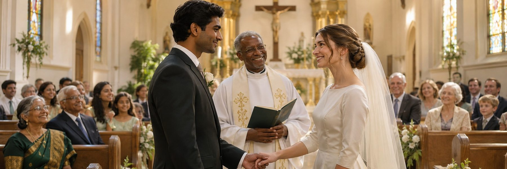

A parish preaching event
Introduce one unit each week through the bulletin and the homily, then gather in small groups after Mass.
Learn moreAn invitation to parish adult formation
We invite your parish to consider I Love Being Catholic as an essential part of its adult formation. The program helps people see how the Church’s teaching, Sacred Scripture, the sacraments, and everyday Catholic life belong together in Jesus Christ. Through five connected units, adults find a welcoming approach to learning, asking questions, and deepening their understanding of the faith they share.
Five connected units. One welcoming invitation.

A familiar gesture, a passage heard at Mass, or a question about Church teaching can open the door to a fuller understanding of Catholic faith. I Love Being Catholic begins with those recognizable experiences and helps participants follow the connections among belief, worship, prayer, and daily choices.
No prior course of study is assumed. Longtime parishioners and adults seeking a fresh understanding are invited to bring their questions, with room for honest reflection.
Read the invitationEach unit begins with the invitation “I love being Catholic because of” and explores one part of the faith in relationship to the whole.
How does the Church receive and hand on the faith?
Explore 2The Catechism of the Catholic Church offers a coherent account of what Catholics believe, celebrate, live, and pray.
Explore 3The Bible is received and read within the Church’s living Tradition.
Explore 4The seven sacraments are encounters with Jesus Christ, who acts through these effective signs of grace.
Explore 5Catholic life engages the senses through prayer, ritual, disciplines, and customs.
ExploreConsider I Love Being Catholic as a continuing resource for your parish’s adult formation. At least three formats offer ways to shape the experience around your community.
Introduce one unit each week through the bulletin and the homily, then gather in small groups after Mass.
Learn moreFive presentations with discussion, from Friday evening to Sunday, in your own parish.
Learn moreA missionary presents one subject each night within a service of hymns, music, and prayers.
Learn moreThe materials work together while allowing your parish to choose the format and pace that best fit its community.
Four resources share one structure, so readers at home, facilitators, and listeners all meet the same clear account of the faith.
See all resourcesI Love Being Catholic is an invitation to begin an ongoing journey of discovery, conversation, and growth in faith. The introductory program is supported by five additional, twelve-week programs that explore its subjects more deeply.
Two are complete and ready for use. Three others are under development and scheduled to be ready by October 1, 2027.
0 days until all five are ready
See the pathway
The five narratives, coordinated leader and participant guides, podcasts, and supporting materials are prepared and available for use.